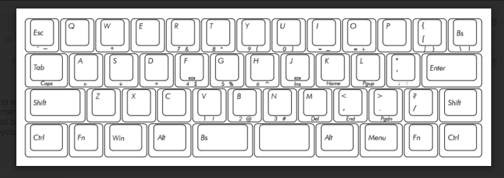

JD45 Default Programming Reference
PROGRAMMING GUIDE for Windows
Step 1: Download Python and install.
Step 2: Download Atmel FLIP and install.
Step 3: Download metalliqaz' excellent Easy AVR USB Keyboard Firmware and Keymapper. You can use either the the Python version, available for download here, or the compiled Windows installer, available here.
Step 4: Start Easy AVR by executing the run.bat script, or clicking on the desktop icon. Select File>New Default Layout..., and select JD45 (Carpe Keyboards). Alternately, you can use my saved default layout, which you can download from here, by choosing File>Open Saved Layout...
Step 5: Modify the keymap to suit your preferences.
Step 6: Save your new layout by choosing File>Save Layout As...
Step 7: Build the firmware .hex file by choosing File>Build Firmware...
Step 8: Open the Atmel FLIP application you installed previously
Step 9: Connect the JD45 keyboard to your PC via USB. Windows should install the drivers automatically.
Step 10: Press the small button switch on the back of the PCB (accessible via the hole in the case) to jump into bootloader mode. At this point, Windows may or may not install the correct drivers for the device.
Step 10a: If necessary, manually install the driver for the bootloader from C:\Program Files (x86)\Atmel\Flip 3.4.7\usb (or wherever you installed FLIP. Open Device Manager, double click on the device, and select the Driver tab. Click Update Driver, and point it at the 'usb' folder mentioned above.
Step 11: In FLIP, select File>Load Hex File... and select the firmware you just built with Easy AVR.
Step 12: Click the IC icon, and select ATmega32U4. Click OK.
Step 13: Click the USB icon, and select USB. In the USB Port Connection window, click Open. If an error occurs, the correct driver is not installed. See Step 10a.
Step 14: Click the Run button on the bottom left. The software should now erase the flash on your chip, program the new firmware to flash, and verify the programming.
Step 15: Disconnect the keyboard from the PC.
Step 16: Connect your JD45 keyboard via USB again, and verify that the new firmware programming is correct. I recommend the useful Aqua's Key Test application for this.
Step 17: Enjoy your feeling!
PROGRAMMING GUIDE for Linux
(courtesy of "the M")
Tested to work with Debian/Ubuntu. For other distros, you may need to download and install packages manually, or revise commands for use with your package manager.
Step 1: Install python with
sudo apt-get install python
Step 2: Download EasyAVR (Info found at https://deskthority.net/wiki/Easy_AVR_USB_Keyboard_Firmware).
wget -O easyavr.zip https://codeload.github.com/dhowland/EasyAVR/zip/master
Step 3: Unpack and adjust Easy AVR
unzip easyavr.zip # Creates a Directory ./EasyAVR-master
cd EasyAVR-master
chmod u+x easykeymap.sh
Step 4: Call Easy AVR
./easykeymap.sh
Step 5: Generate a new default keymap
File -> New Default Layout -> JD45 (Carpe Keyboards) [ <All Keys> ]
Step 6: Edit your keymap; Help is found in the "Help" Menu of EasyAVR
Step 7: Build the firmware from it:
File -> Build Firmware -> "mynewfirmware.hex"
Step 8: Install dfu-programmer:
sudo apt-get install dfu-programmer
Step 9: Connect your JD45 keyboard to your computer and press the little button at the buttom while it is connected. You will see something like
... usb 1-4: New USB device found, idVendor=03eb, idProduct=2ff4
... usb 1-4: New USB device strings: Mfr=1, Product=2, SerialNumber=3
... usb 1-4: Product: ATm32U4DFU
... usb 1-4: Manufacturer: ATMEL
... usb 1-4: SerialNumber: 1.0.0
in your syslog.
Step 10: Erase and upload
sudo dfu-programmer atmega32u4 erase --debug 5
sudo dfu-programmer atmega32u4 flash mynewfirmware.hex --debug 5
Step 11: Disconnect and reconnect your JD45 keyboard. It will work with the new layout now.
Note 1: Please adapt file names to your needs.
Note 2: The default firmware at your board is lost. I did not find a way to save it. dfu-programmer dump did not work.
Note 3: The default firmware offered above is NOT identical with the firmware preinstalled at the keyboard. However it works fine also. The preinstalled firmware is really lost. As I didn't really like it, this was no problem for me.
Note 4: I didn't need FLIP or Teensy that are mentioned in most other guides. I couldn't install them anyway.